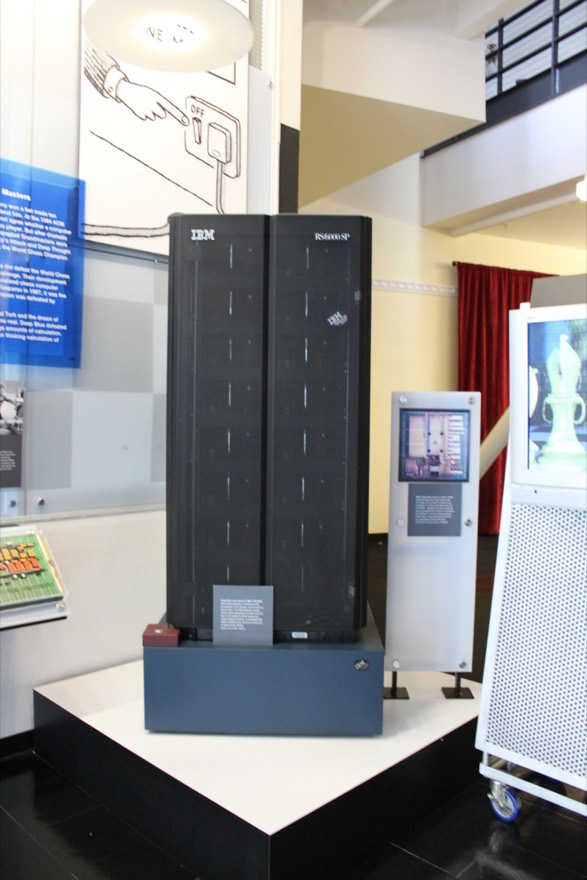
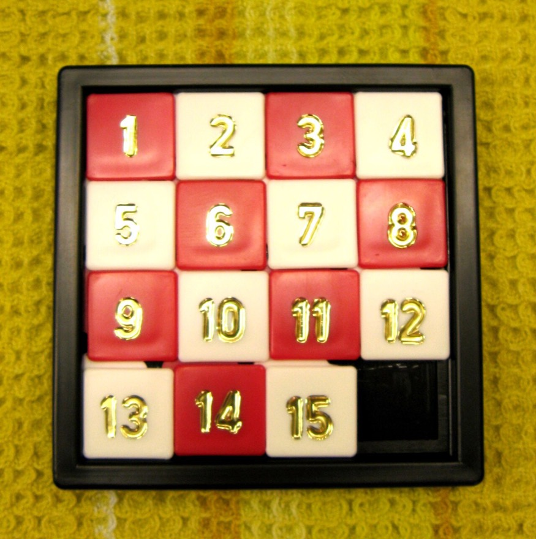

1997년, IBM이 만든 컴퓨터 ‘딥 블루’가 세계 체스 챔피언 가리 카스파로프를 이겼어요. 딥 블루는 사람처럼 ‘감’으로 두지 않았어요. 체스판에서 둘 수 있는 수백만 가지 수를 아주 빠르게 하나하나 살펴보고 그중 가장 유리한 수를 골랐어요.
이렇게 가능한 경우를 살펴보며 답을 찾는 것이 ‘탐색’이에요. 오늘날 길 찾기 앱, 로봇 청소기, 자율주행 자동차, 게임 속 인공지능도 모두 탐색을 써요.
코드 아래 💡 코드 설명을 펼쳐 보고, 빈칸이 있으면 채운 뒤 실행해 보세요.
교과서 · Ⅲ 2-1 탐색 기반 알고리즘의 이해
‘탐색’은 찾아다니는 것이에요. 가능한 경우를 지도처럼 펼쳐 놓고, 그 안에서 답이 있는 곳까지 길을 찾아가는 방법을 배워요.
컴퓨터는 퍼즐이나 체스 같은 문제의 답을 어떻게 찾아낼까?
1997년, IBM이 만든 컴퓨터 ‘딥 블루’가 세계 체스 챔피언 가리 카스파로프를 이겼어요. 딥 블루는 사람처럼 ‘감’으로 두지 않았어요. 체스판에서 둘 수 있는 수백만 가지 수를 아주 빠르게 하나하나 살펴보고 그중 가장 유리한 수를 골랐어요.
이렇게 가능한 경우를 살펴보며 답을 찾는 것이 ‘탐색’이에요. 오늘날 길 찾기 앱, 로봇 청소기, 자율주행 자동차, 게임 속 인공지능도 모두 탐색을 써요.

탐색으로 문제를 풀려면 먼저 문제를 또렷하게 정해야 해요. 문제란 어떤 목표를 이루기 위해 해결해야 하는 과제이고, 세 가지 요소로 이루어져요.
문제 해결을 시작하는 상태.
퍼즐이 뒤섞여 있는 처음 모습
문제 해결의 목적이 되는 상태.
숫자가 순서대로 맞춰진 모습
초기 상태에서 목표 상태로 가기 위해 할 수 있는 일. 행동 하나가 지금 상태를 다른 상태로 바꿔요.
빈칸을 위·아래·왼쪽·오른쪽으로 한 칸 옮기기

8-퍼즐은 1~8이 적힌 타일 8개와 빈칸 1개로 되어 있어요. 빈칸을 움직여(= 옆의 타일을 빈칸으로 밀어) 숫자를 순서대로 맞추면 돼요. 가운데가 비어 있다면 빈칸을 옮길 수 있는 방향은 위(UP)·왼쪽(LEFT)·아래(DOWN)·오른쪽(RIGHT) 네 가지예요.
빈칸과 맞닿은 타일(테두리가 진한 타일)을 누르면 빈칸 자리로 옮겨져요. 제자리에 놓인 타일은 색이 칠해져요. 목표 상태는 1 2 3 / 4 5 6 / 7 8 빈칸이에요.
빈칸을 한 번 옮길 때마다 새로운 상태가 생기고, 그 상태에서 또 옮기면 또 새로운 상태가 생겨요. 이렇게 초기 상태에서 목표 상태까지 가는 동안 거칠 수 있는 모든 상태를 모아 놓은 것이 상태 공간이에요. 상태 공간은 위 그림처럼 가지를 치며 뻗어 나가는 그래프(트리)로 그릴 수 있어요.
상태 공간은 갈림길이 그려진 미로 지도예요. 갈림길마다 갈 수 있는 길을 전부 그려 넣은 지도죠. 지도가 있으면 “어느 길로 가야 출구가 나오는지” 차근차근 찾을 수 있어요. 탐색 알고리즘은 이 지도 위를 돌아다니는 방법이에요.
집에서 학교까지 가는 길이 아래와 같아요. 같은 곳을 두 번 지나지 않는다면, 집에서 출발해 학교까지 갈 수 있는 모든 경우를 상태 공간(가지 그림)으로 그려 보자.
집에서 갈 수 있는 곳은 A와 C 두 곳이에요. 가지를 끝까지 뻗어 보면 4가지예요.
코드를 고쳐서 ▶ 실행하면 출력이 맞는지 바로 알려 줘요. 막히면 힌트부터 열어 보세요.
생활 속 문제 하나(예: 루빅스 큐브 맞추기, 엘리베이터로 7층 가기, 방 정리하기)를 골라 초기 상태 · 목표 상태 · 행동으로 나누어 적어 보세요. 행동은 실제로 할 수 있는 일로 2개 이상 적어요.
8-퍼즐 판을 길이 9인 리스트로 나타냈어요(0이 빈칸). 위치 i(0~8)를 줄 r과 칸 c로 바꾸는 식을 ___에 채우면, 지금 상태에서 할 수 있는 행동이 출력돼요. 구석에 있으면 행동이 몇 개로 줄어드나요?
def moves(state):
i = state.index(0) # 빈칸(0)의 위치 0~8
r, c = ___, ___ # 몇째 줄, 몇째 칸인지 (0부터)
result = []
if r > 0: result.append('UP')
if r < 2: result.append('DOWN')
if c > 0: result.append('LEFT')
if c < 2: result.append('RIGHT')
return result
print(moves([1, 2, 3, 4, 0, 5, 7, 8, 6])) # 빈칸이 가운데
print(moves([1, 2, 3, 4, 5, 6, 7, 8, 0])) # 빈칸이 오른쪽 아래 구석
print(moves([1, 0, 3, 4, 2, 5, 7, 8, 6])) # 빈칸이 윗줄 가운데한 줄에 3칸이에요. 줄 번호는 3으로 나눈 몫(//), 칸 번호는 3으로 나눈 나머지(%)예요.
def moves(state):
i = state.index(0) # 빈칸(0)의 위치 0~8
r, c = i // 3, i % 3 # 몇째 줄, 몇째 칸인지 (0부터)
result = []
if r > 0: result.append('UP')
if r < 2: result.append('DOWN')
if c > 0: result.append('LEFT')
if c < 2: result.append('RIGHT')
return result
print(moves([1, 2, 3, 4, 0, 5, 7, 8, 6])) # 빈칸이 가운데
print(moves([1, 2, 3, 4, 5, 6, 7, 8, 0])) # 빈칸이 오른쪽 아래 구석
print(moves([1, 0, 3, 4, 2, 5, 7, 8, 6])) # 빈칸이 윗줄 가운데교과서의 길 그림을 딕셔너리로 옮겼어요. 같은 곳을 두 번 지나지 않으면서 집에서 학교까지 가는 모든 길을 출력하도록 for 문 안을 완성해 보세요. 손으로 그린 상태 공간(4가지)과 같은지 확인해요.
road = {
'집': ['A', 'C'],
'A': ['집', '학교', 'B'],
'B': ['A', 'C', '학교'],
'C': ['집', 'B'],
'학교': ['A', 'B'],
}
count = 0
def go(now, path):
global count
if now == '학교': # 목표 상태에 닿으면
count += 1
print(' ─ '.join(path))
return
for nxt in road[now]: # 할 수 있는 행동: 이어진 곳으로 한 칸
pass # 여기에: 아직 안 간 곳이면 그곳으로 이동
go('집', ['집'])
print('모두', count, '가지')if nxt not in path: 일 때만 go(nxt, path + [nxt]) 를 불러 보세요. path + [nxt]는 지금까지의 길에 nxt를 붙인 새 길이에요.
road = {
'집': ['A', 'C'],
'A': ['집', '학교', 'B'],
'B': ['A', 'C', '학교'],
'C': ['집', 'B'],
'학교': ['A', 'B'],
}
count = 0
def go(now, path):
global count
if now == '학교': # 목표 상태에 닿으면
count += 1
print(' ─ '.join(path))
return
for nxt in road[now]: # 할 수 있는 행동: 이어진 곳으로 한 칸
if nxt not in path: # 같은 곳은 두 번 지나지 않기
go(nxt, path + [nxt])
go('집', ['집'])
print('모두', count, '가지')해설 — 행동(연산자)은 지금 상태를 다른 상태로 바꾸는 일이에요.
해설 — 상태 공간은 갈림길까지 모두 그려 넣은 지도와 같아요. 보통 가지를 치는 트리 모양이에요.
탐색이란 무엇인지 ‘상태 공간’이라는 말을 넣어 한 문장으로 적어 보세요.